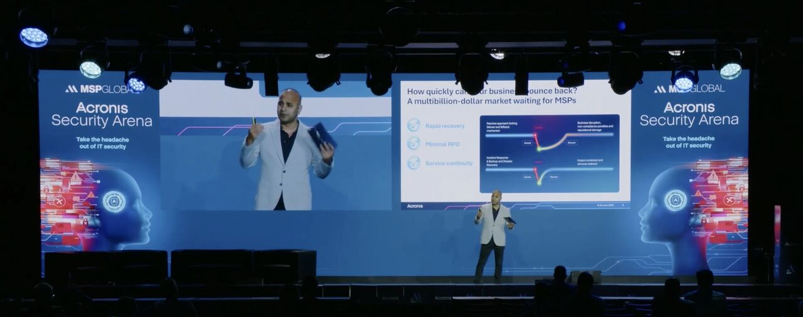
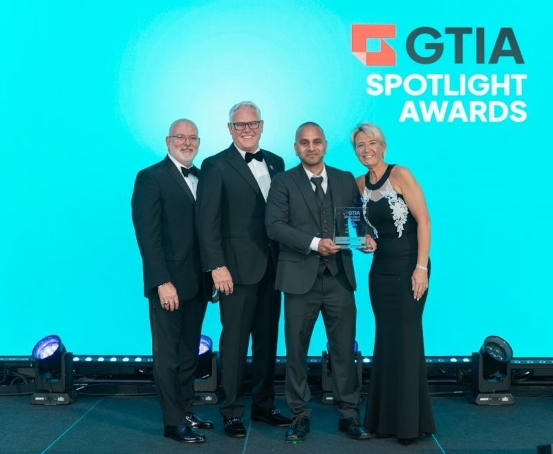
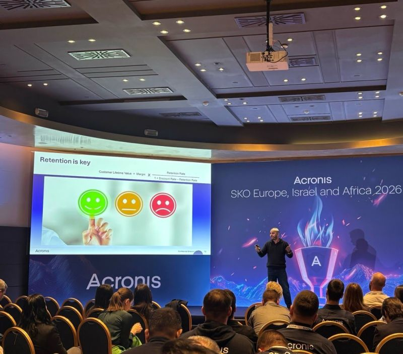
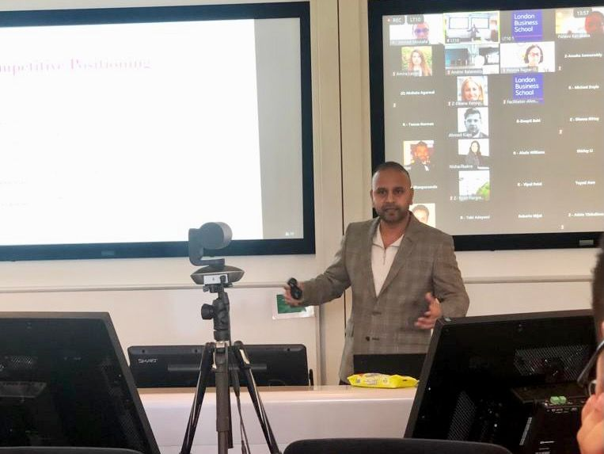

Cyber resilience strategy
Executive programmes connecting prevention, response, recovery and business continuity.
Cyber resilience · AI security · Executive leadership
Subramani Rao is an award-winning cybersecurity leader, author and international speaker helping organisations strengthen cyber resilience, AI security, governance, risk and compliance, operational technology security and executive decision-making.

About
Subramani Rao is an award-winning cybersecurity leader, author and international speaker specialising in cyber resilience, AI security, governance, risk and compliance, operational technology security and executive cybersecurity strategy.
His career spans major cybersecurity and technology organisations including Acronis, Palo Alto Networks, Fortinet, F5 and Cloudflare. He has led and supported critical cybersecurity initiatives for British Telecom, Sky, Vodafone, Virgin Media, banks, retailers and other complex organisations.
His work connects cyber risk with business impact: strengthening governance and audit readiness, improving incident response and recovery, protecting operational technology, and helping executive teams make clearer security decisions.
Subramani holds an Executive MBA from London Business School, an MSc in Computer Security with Distinction from the University of Essex, and the CISSP certification. He is the author of two books on AI and cybersecurity, and his SANS research on distributed denial-of-service attacks has received more than 48 academic citations.
In 2026, he became the sole recipient of the GTIA UK & Ireland Cybersecurity Leadership Award.
How I help organisations
Executive programmes connecting prevention, response, recovery and business continuity.
Practical guidance for governing AI risk and adopting AI securely across the enterprise.
Governance, risk and compliance through resilience assessments, audit readiness, regulatory alignment and executive reporting.
Incident response, business impact analysis, legacy system protection and operational continuity across critical infrastructure.
Board-ready counsel on cyber risk, strategy, transformation and go-to-market.
Engaging sessions that turn cybersecurity complexity into memorable, actionable insight.

Recognition
Recognised for leadership and contribution to cyber resilience across the technology channel.
Official GTIA announcement →Certified Information Systems Security Professional, achieved in 2025.
London Business School, First Class.
University of Essex, Distinction.
Author of two books focused on artificial intelligence and cybersecurity.
48+ academic citations to SANS DDoS research.
Conference, executive and industry speaking across cyber resilience and AI security.
Speaking


Career journey
MSc Computer Security with Distinction and SANS DDoS publication.
Delivered cybersecurity initiatives across Sky, Vodafone and Virgin Media.
Led BT enterprise security strategy supporting large-scale transformation.
Executive MBA, London Business School, First Class.
Advised Dubai Future District Fund on cybersecurity trends, emerging technologies and strategic investment opportunities.
Achieved the Certified Information Systems Security Professional (CISSP) certification.
GTIA Cybersecurity Leadership Award and international speaking.
Books & research

A practical handbook for understanding security, privacy and risk in the digital age.

An exploration of how artificial intelligence reshapes security, society and human possibility.
SANS Institute research on distributed denial-of-service attacks, cited across academic and professional work.
The DDoS publication has accumulated more than 48 academic citations across multiple years and geographies.
Media & Interviews
Analysis of ransomware resilience, clean recovery and the limitations of backup-only strategies.
Commentary on recovery readiness, operational resilience and modern attack behaviour.
Industry perspective on why managed service providers must think beyond prevention.
Let's work together
For keynote speaking, executive advisory, cyber resilience strategy, media commentary or industry collaboration, start a confidential conversation.